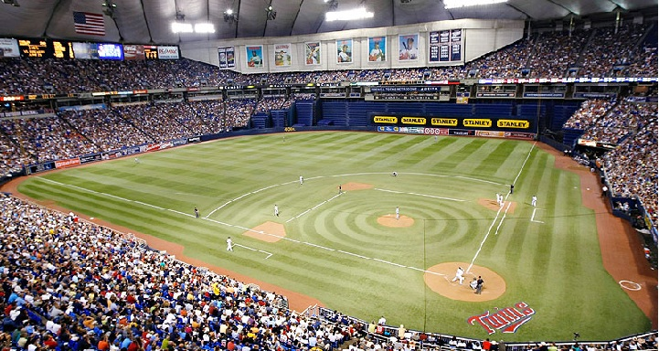
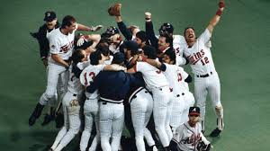

Background

Hubert H. Humphrey Metrodome, home stadium of the Minnesota Twins from 1982-2009.
The Minnesota Twins franchise started in 1901 as the Washington Senators as one of the original eight American League teams. The club won the World Series in 1924, but saw little team success following their World Series win. In 1961, the team moved and rebranded as the Minnesota Twins, representing the twin cities of Minnesota, Minneapolis and Saint Paul. In their 4th year in Minnesota, they return to the World Series, but lost to the Dodgers in seven games. They wouldn't return until 1987, when an unsuspecting 85-77 Twins squad shocked everyone beating the Cardinals in a seven game World Series. By 1991, nearly all the players from the 1987 were gone except center fielder Kirby Puckett, shortstop Greg Gagne, and first basemen Kent Hrbek. They were able to win 95 games and were ready to make another postseason run.
World Champions

The twins celebrate after winning the World Series.
In the American League Championship series, the Twins took on the Toronto Blue Jays. In this best of seven series, the Twins won two of the first three games in close fashion winning by a combined five runs. The bats came alive in games 4 and 5 finishing the series with 17 runs scored in the final two games. Kirby Puckett led the way with 9 hits in the series and 2 home runs. On the pitching side, Jack Morris stood out winning two games and Rick Aguilera saved three of the four Twins' victories in the series. Their matchup in the World Series was the team of the 90s, the Atlanta Braves. The 1991 Braves team featured a heavy hitting lineup led by MVP winning third basemen Terry Pendleton and hard hitting outfielder David Justice and Ron Gant. Their pitching, however, defined the team with the Hall of Fame duo of John Smoltz and Tom Glavine who won that year's Cy Young award, along with Steve Avery coming off the best regular season of his career. In a dramatic seven game series, the home team won every game, there were five games decided by one run, and three games went to extra innings. Game six will be remembered for Kirby Puckett's season saving performance with a triple, home run, 3 runs batted in, and miraculous catch in center field in a 4-3 victory. The deciding game 7 featured a spectacular pitching matchup between Hall of Fame Inductees Jack Morris and John Smoltz. Both teams were held scoreless after the first nine innings. Jack Morris took the mound for the 10th inning and shut down the Braves offense once more. In the bottom of the 10th with Dan Gladden standing 90 feet away from scoring the winning run, Gene Larkin hit a fly ball to left center field, walking off the World Series and putting the Minnesota Twins at the peak of the mountaintop for the second time in five years. Minnesota native Jack Morris was awarded as the World Series Most Valuable Player.
Impact

Kirby Puckett celebrates home run.
The 1991 World Series had a profound cultural and economic impact on Minnesota, uniting the state behind the Minnesota Twins during one of the most dramatic championships in baseball history. Facing the Atlanta Braves, the series went to seven games, highlighted by legendary performances such as Kirby Puckett’s Game 6 home run and Jack Morris’s 10-inning shutout in Game 7. The victories electrified fans inside the Hubert H. Humphrey Metrodome and across the state, restoring civic pride after a last-place finish just two years earlier. Beyond the field, the championship boosted local morale, strengthened the Twins’ legacy, and became a defining sports moment that still shapes Minnesota’s identity as a passionate baseball state. The 1991 Minnesota Twins remain the last major Minnesota sports team to win a championship.